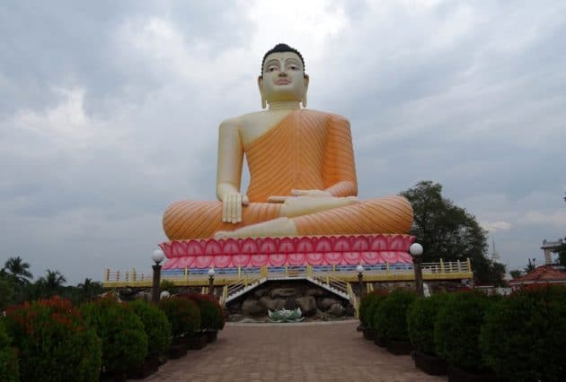
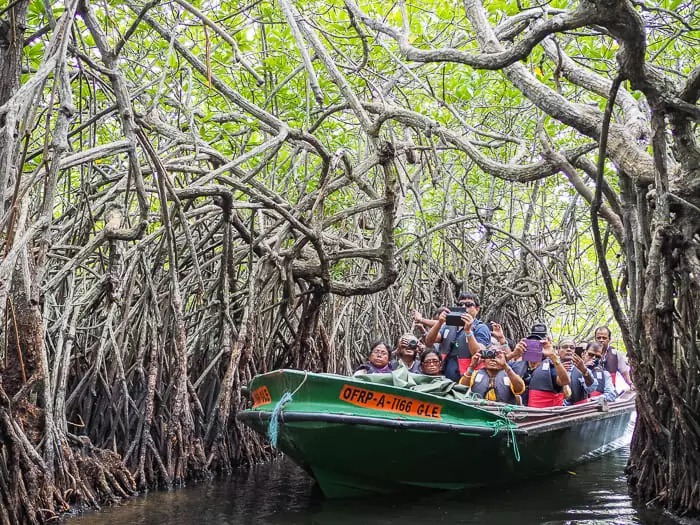
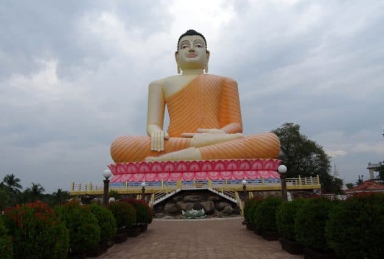
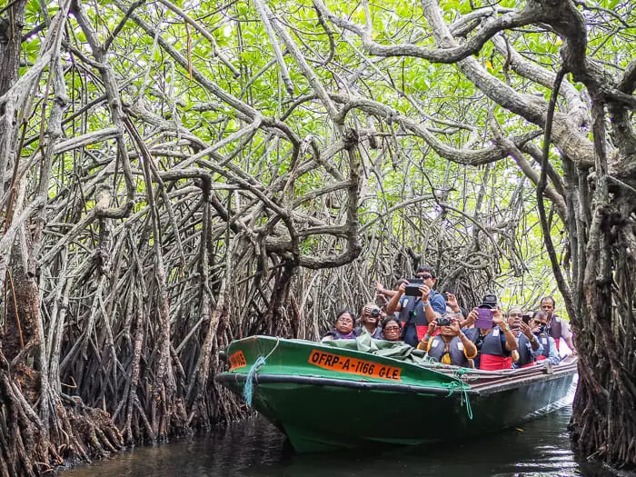
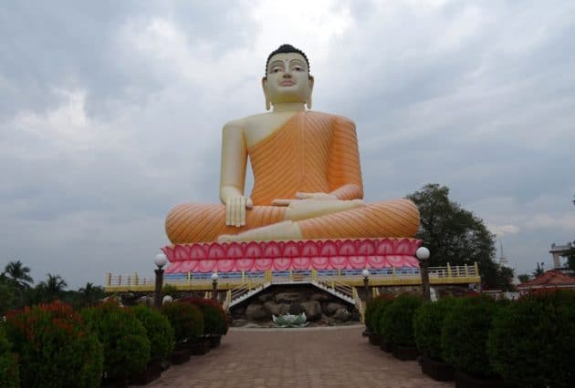
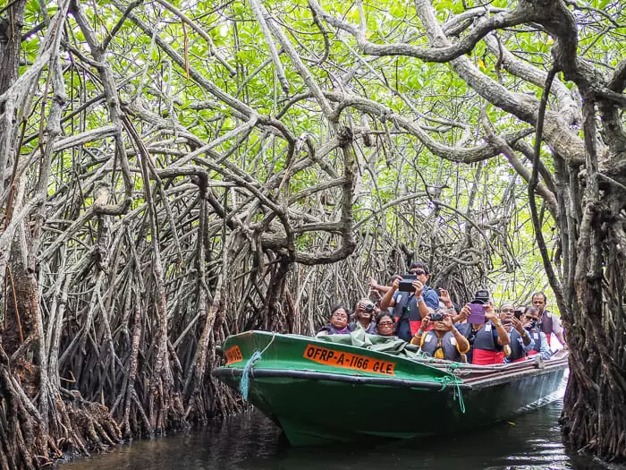
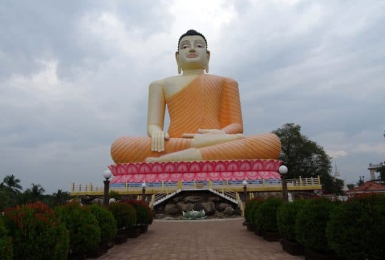
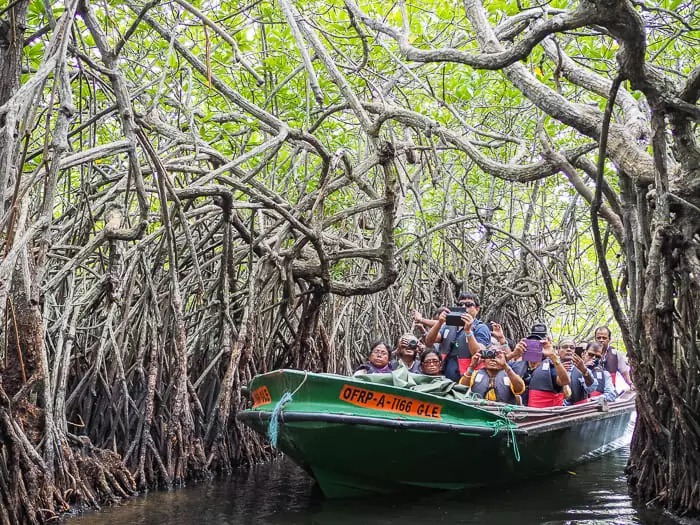

The Bentota Turtle Hatchery, located in Bentota, Sri Lanka, is a conservation project dedicated to protecting sea turtles.
The hatchery plays a crucial role in the preservation and rehabilitation of these endangered creatures. The hatchery primarily
deals with five species of sea turtles found in Sri Lanka: the Green Turtle, Loggerhead Turtle, Hawksbill Turtle, Olive Ridley
Turtle, and Leatherback Turtle. These species are endangered or critically endangered.
Sea turtles come ashore to lay their eggs during the nesting season, which typically runs from October to April. During
this time, the hatchery actively monitors and protects nesting sites to ensure the survival of the eggs.When turtle eggs are
laid in vulnerable locations or at risk, they are collected by the hatchery staff. The eggs are then incubated in a controlled
environment to enhance their chances of survival. Once the hatchlings emerge, they are kept at the hatchery for a brief period
to ensure their health and growth before being released into the ocean.
he history of the Bentota Turtle Hatchery in Sri Lanka dates back to the early 1980s. It was established as a response to
the declining population of sea turtles due to various threats, such as habitat destruction, poaching, and pollution.The initiative
to create the hatchery was led by a local community organization called the Kosgoda Turtle Conservation Project. The project aimed
to protect sea turtles by collecting their eggs from vulnerable nesting sites and providing a safe environment for their incubation.
The hatchlings would then be released into the ocean, increasing their chances of survival.
Over the years, the Bentota Turtle Hatchery expanded its activities beyond incubation and release. It began focusing on research,
rehabilitation, and public awareness campaigns to address the broader conservation needs of sea turtles. The hatchery played a crucial
role in studying the nesting habits, behavior, and migration patterns of sea turtles, providing valuable insights for conservation efforts.